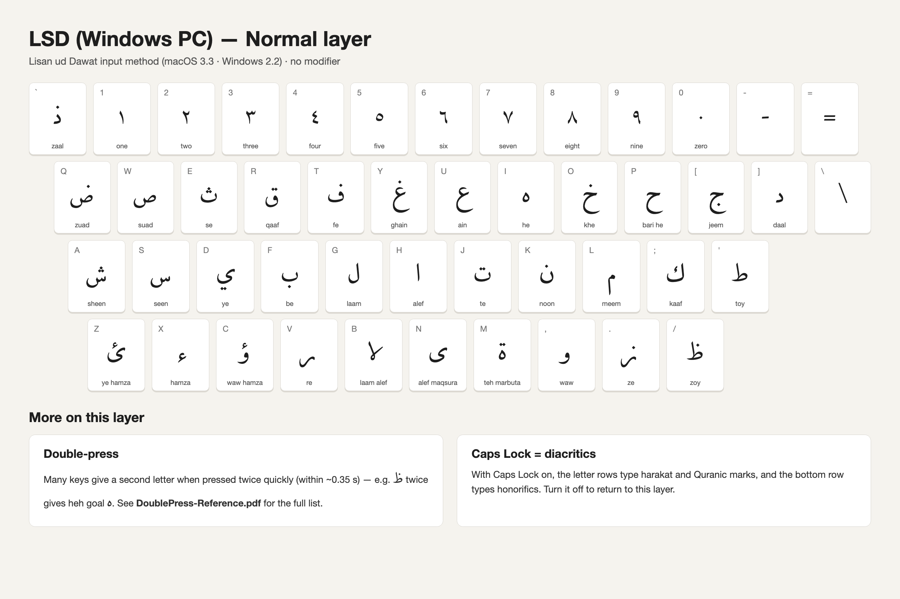
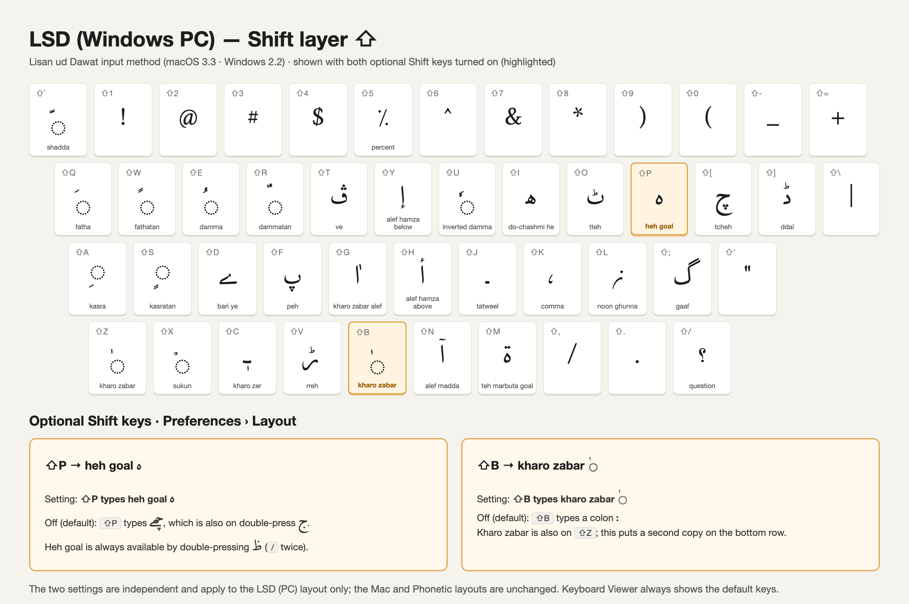

LigaCheh Keyboard · Windows
LigaCheh for Windows
An input method with text prediction, plus the original keyboard layout.
Two ways to type Lisān ud-Daʿwat on Windows. The input method is the fuller one — it adds text prediction, a phonetic layout, and a diacritic layer on Caps Lock. The keyboard layout is the older, simpler option: key mappings only, no prediction.
Input method
A Text Services Framework input method carrying two profiles — a Lisān ud-Daʿwat layout and a LigaCheh Roman mode that transliterates as you type — sharing the prediction engine with the iOS and Android keyboards. The installer also sets up the FatemiMaqala font and a LSD Settings entry in the Start menu.
- Run the installer and approve the elevation prompt — it needs administrator rights to register the input method and install the font.
- Keep the machine online for the first install: it fetches the Visual C++ runtime if that is not already present.
- Switch to it from the language bar, or with Windows + Space.
Version 2.2.0, for 64-bit Windows 10 and 11. The installer is signed with an extended-validation certificate issued to Exordium Networks Inc., so Windows should install it without a SmartScreen warning.
Key layout
The input method uses the LSD (PC) layout. Tap an image to open it full size. The AltGr layer (honorific signs, ornate brackets and more) is not shown here.




Keyboard layout only
A Lisān ud-Daʿwat keyboard layout authored with the Microsoft Keyboard Layout Creator (MSKLC). No prediction, and it must be built before use.
- Download the layout source: maqalaAra.klc
- Open it in MSKLC (File → Load Source File…), then Project → Build DLL and Setup Package.
- Run the generated
setup.exe, then add the layout under Settings → Time & language → Language & region.
Prefer a cross-platform option? The Keyman package also runs on Windows — see More platforms.
← LigaCheh Keyboard